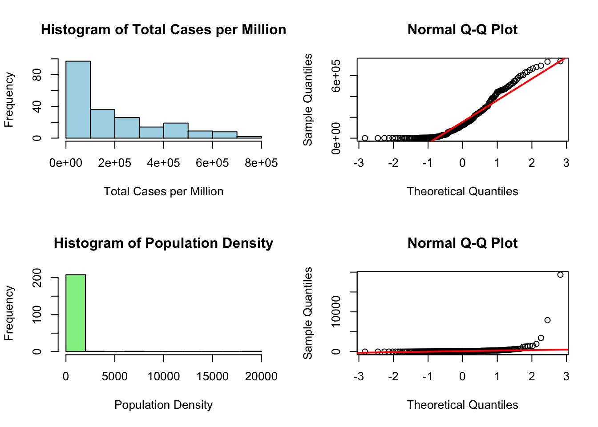
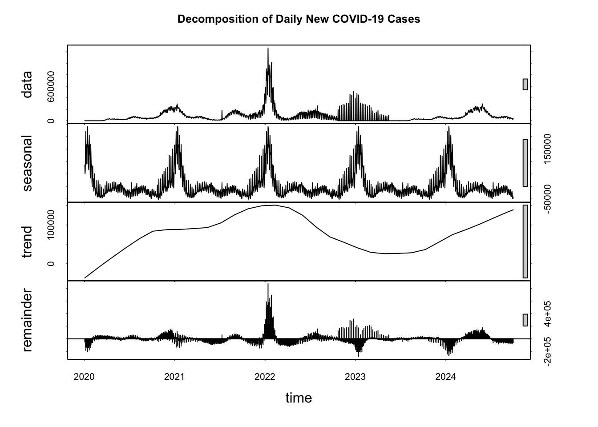
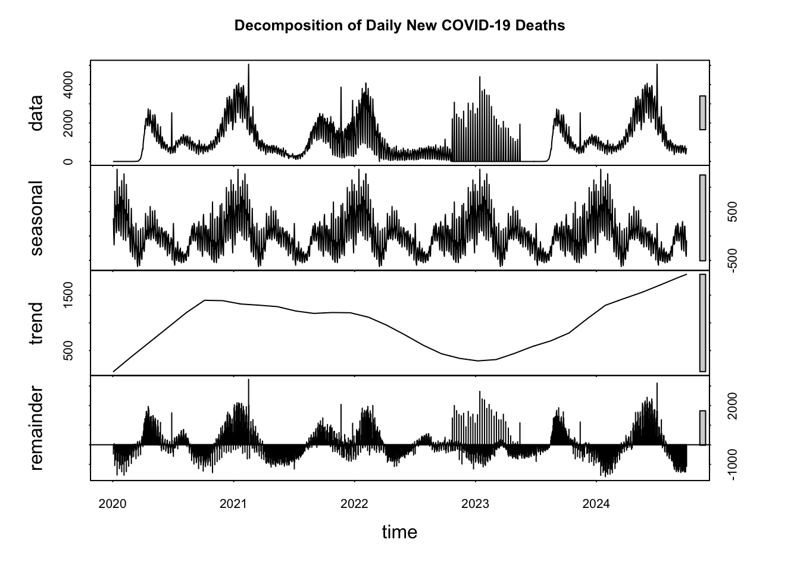
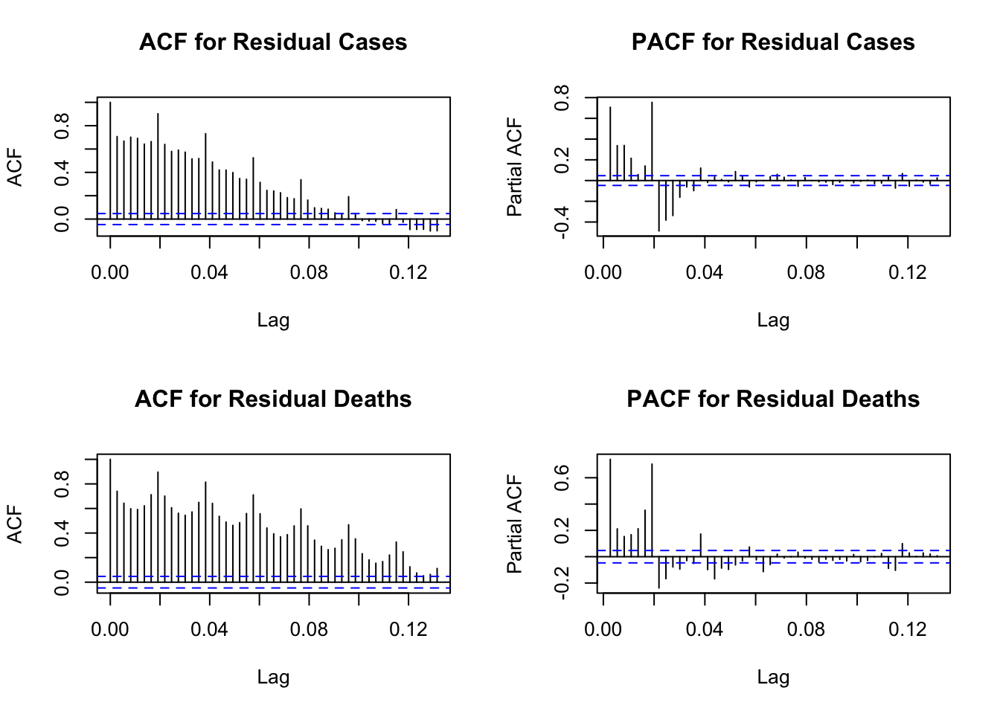
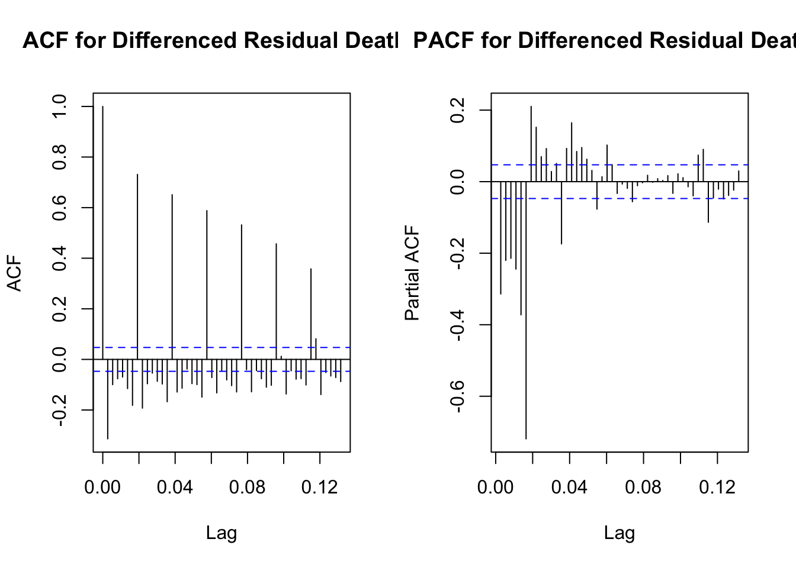
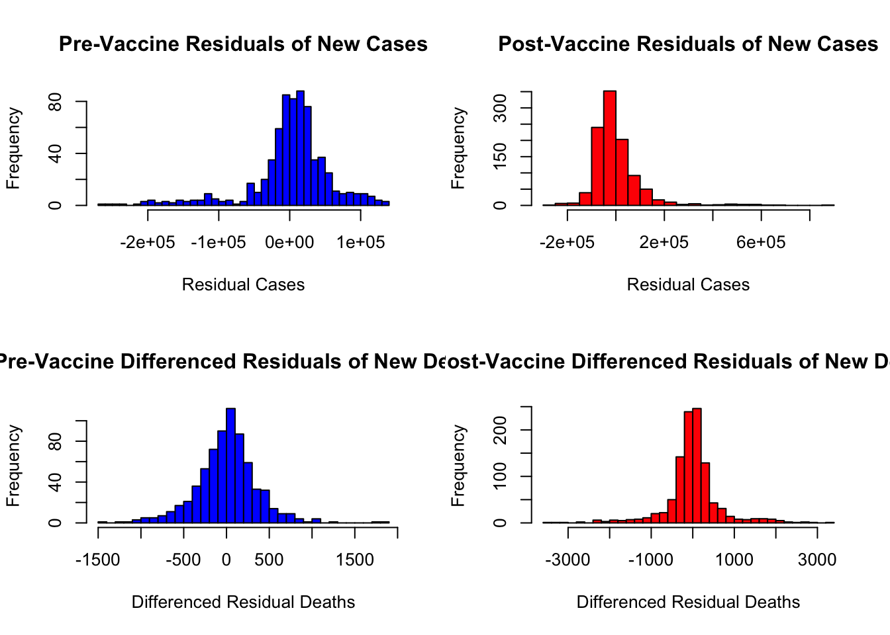

In this section, I will use hypothesis testing methods to examine the impact of population density on COVID-19 infection rates, and the impact of vaccines on the number of daily new COVID-19 cases and deaths in the United States.
Population Density and Infection Rates of COVID-19
Prior visualizations and analyses have revealed substantial global variations in COVID-19 infection rates. To investigate the potential correlation between these rates and population density, it is essential to first analyze the probability distributions of both COVID-19 infection rates (Total cases per million) and population densities across different countries.
Distribution
Code
# Setting up the layoutpar(mfrow =c(2, 2))# Histogram for 'total_cases_per_million'hist(owid_covid_data_country_clean$total_cases_per_million, main="Histogram of Total Cases per Million", xlab="Total Cases per Million", col="lightblue", border="black")# Q-Q plot for 'total_cases_per_million'qqnorm(owid_covid_data_country_clean$total_cases_per_million)qqline(owid_covid_data_country_clean$total_cases_per_million, col ="red", lwd =2)# Histogram for 'population_density'hist(owid_covid_data_country_clean$population_density, main="Histogram of Population Density", xlab="Population Density", col="lightgreen", border="black")# Q-Q plot for 'population_density'qqnorm(owid_covid_data_country_clean$population_density)qqline(owid_covid_data_country_clean$population_density, col ="red", lwd =2)

The histogram of total cases per million is right-skewed, indicating that a majority of the data points are on the lower side of the scale, with fewer countries having very high total cases per million. The histogram of population density shows a very sharp right skew. This suggests that most countries have a relatively low population density, with very few countries having extremely high population densities.
The Q-Q plot for total cases per million deviates from the straight line, especially at the higher quantiles, which confirms the skew seen in the histogram. This indicates that the distribution of total cases per million is not normally distributed. The Q-Q plot for population density deviates significantly from the line across all quantiles, indicating that the distribution of population density is also not normal and is heavily skewed to the right.
Considering the non-normal distribution of your data, I want to use non-parametric tests, for instance, Spearman’s Rank Correlation Coefficient Test.
Spearman’s Rank Correlation Coefficient Test and Result
Spearman’s Rank Correlation Coefficient is a non-parametric test that measures the strength and direction of the association between two ranked variables. Unlike Pearson’s correlation coefficient, Spearman’s does not assume that the data are normally distributed, making it more appropriate for ordinal data or continuous data that do not meet the assumptions of normality. The null hypothesis and alternative hypothesis that were determined are listed below:
H0: There is no monotonic relationship between ‘total cases per million’ and ‘population density’.
H1: There is a monotonic relationship between ‘total cases(either increasing or decreasing, but not necessarily linear) per million’ and ‘population density’.
Spearman's rank correlation rho
data: owid_covid_data_country_clean$total_cases_per_million and owid_covid_data_country_clean$population_density
S = 1127116, p-value = 3.943e-05
alternative hypothesis: true rho is not equal to 0
sample estimates:
rho
0.2800833
The result of the Spearman’s rank correlation test indicates a statistically significant association between the total cases per million and population density across different countries, as evidenced by the p-value of approximately 0.00003943. This p-value is much lower than the common alpha level of 0.05, suggesting that the observed correlation is unlikely to have occurred by chance.
The sample estimate of Spearman’s rho is 0.2800833, which denotes a positive correlation between the two variables. Although this value of rho suggests a positive association, it is not very strong. The coefficient indicates that as population density increases, the total cases per million tend to increase as well, albeit not in a perfectly linear fashion.
Given the alternative hypothesis that the true rho is not equal to zero, the test result supports the conclusion that there is a statistically significant but moderate positive correlation between population density and total COVID-19 cases per million. However, it is important to consider other factors that could also influence the number of reported COVID-19 cases and remember that correlation does not imply causation.
Vaccination and the Infection/Death Rates of COVID-19
The analysis and visualizations previously presented reveal a notable decrease in daily new COVID-19 cases and deaths in the United States following the commencement of vaccinations. However, attributing this decline directly to the vaccine’s impact necessitates additional investigation. For the purpose of this study, I have postulated that the vaccine’s effects began to manifest subsequent to the initiation of the vaccination campaign on December 13, 2020. Accordingly, the data has been segregated into two distinct periods: pre-vaccination and post-vaccination, to be prepared for hypothesis testing. It is important to acknowledge that in reality, vaccines typically require a certain level of population coverage to effectively curb the spread of a virus. Nonetheless, for the sake of simplifying this analysis, I will proceed with the assumption that the vaccine began exerting its influence immediately after the vaccination program was launched.
Decomposing
An important prerequisite for hypothesis testing in time series analysis, which sets it apart from cross-sectional data analysis, is the assessment of data stationarity. Stationarity implies that the time series’ statistical properties—such as mean, variance, and autocorrelation—remain constant over time. My prior analyses have indicated the presence of trends and seasonal fluctuations in the data pertaining to new cases and deaths. Consequently, I employed the decomposition method to transform the data, thereby stabilizing these temporal elements before proceeding further with hypothesis testing.
Code
# Plotting the decomposed componentsplot(decomposed_cases, main ="Decomposition of Daily New COVID-19 Cases")

Code
plot(decomposed_deaths, main ="Decomposition of Daily New COVID-19 Deaths")

Checking Stationarity
Code
# ADF test on new casesadf_test_cases <-adf.test(residual_cases, alternative ="stationary")# ADF test on new deathsadf_test_deaths <-adf.test(residual_deaths, alternative ="stationary")# Output for new casesprint(adf_test_cases)
Augmented Dickey-Fuller Test
data: residual_cases
Dickey-Fuller = -8.9859, Lag order = 12, p-value = 0.01
alternative hypothesis: stationary
Code
# Output for new deathsprint(adf_test_deaths)
Augmented Dickey-Fuller Test
data: residual_deaths
Dickey-Fuller = -3.1729, Lag order = 12, p-value = 0.09258
alternative hypothesis: stationary
Code
# Setting up the layoutpar(mfrow =c(2, 2))# ACF and PACF for new cases residualsacf(residual_cases, lag =48, main="ACF for Residual Cases")pacf(residual_cases, lag =48, main="PACF for Residual Cases")# ACF and PACF for new deaths residualsacf(residual_deaths, lag =48, main="ACF for Residual Deaths")pacf(residual_deaths, lag =48, main="PACF for Residual Deaths")

The ACF for residual cases shows a significant drop-off after the first few lags, suggesting that any autocorrelation in the original series may have been removed, likely due to differencing or other transformations. The PACF for residual cases displays a sharp cut-off after the first lag, which typically suggests an AR(1) process could be a good model for the time series.
The ACF for residual deaths decreases gradually, which may indicate a slower decay in correlation and could suggest a higher order of AR process or a need for further differencing. The PACF for residual deaths also trails off, suggesting complexity in the data that might not be fully captured by a simple AR or MA model.
For residual cases, the ADF test statistic is -8.9859 with a p-value of 0.01. Since the p-value is less than the common significance level of 0.05, we reject the null hypothesis of a unit root being present, indicating that the time series of residual cases is stationary.
For residual deaths, the ADF test statistic is -3.1729 with a p-value of 0.09258. This p-value is greater than 0.05, which means we fail to reject the null hypothesis of a unit root, indicating that the time series of residual deaths might not be stationary.
The analysis suggests that the residuals for cases are stationary and suitable for further analysis. However, the residuals for deaths may require further transformation to achieve stationarity, such as additional differencing.
First-Differencing
Code
# First differencing for new deaths residualsdiff_deaths <-diff(residual_deaths)
Code
# Setting up the layoutpar(mfrow =c(1, 2))# ACF and PACF for differenced new deaths residualsacf(diff_deaths, lag =48, main="ACF for Differenced Residual Deaths")pacf(diff_deaths, lag =48, main="PACF for Differenced Residual Deaths")

It can be seen that the time-series after the 1st-differencing is more stationary and basically meets the conditions for hypothesis testing.
Distribution
Code
# Assuming 'vaccine_start_date' is the date when vaccination startedvaccine_start_date <-as.Date("2020-12-13")# Splitting the datapre_vaccine_residual_cases <- residual_cases[covid_data$date < vaccine_start_date]post_vaccine_residual_cases <- residual_cases[covid_data$date >= vaccine_start_date]pre_vaccine_diff_deaths <- diff_deaths[covid_data$date < vaccine_start_date]post_vaccine_diff_deaths <- diff_deaths[covid_data$date >= vaccine_start_date]
Code
# Setting up the layoutpar(mfrow =c(2, 2))# Plotting for new caseshist(pre_vaccine_residual_cases, main ="Pre-Vaccine Residuals of New Cases", xlab ="Residual Cases", col ="blue", breaks =30)hist(post_vaccine_residual_cases, main ="Post-Vaccine Residuals of New Cases", xlab ="Residual Cases", col ="red", breaks =30)# Plotting for new deathshist(pre_vaccine_diff_deaths, main ="Pre-Vaccine Differenced Residuals of New Deaths", xlab ="Differenced Residual Deaths", col ="blue", breaks =30)hist(post_vaccine_diff_deaths, main ="Post-Vaccine Differenced Residuals of New Deaths", xlab ="Differenced Residual Deaths", col ="red", breaks =30)

From the histogram, the residuals for new cases and new deaths do not fit the normal distribution, I can use a non-parametric test such as the Mann-Whitney U test.
Mann-Whitney U test and Result
The Mann-Whitney U test is a non-parametric statistical test that is used to compare differences between two independent groups when the dependent variable is either ordinal or continuous, but not normally distributed. It does not assume normality of the residuals and is especially useful when dealing with skewed distributions or when you have outliers that could affect the results of a parametric test like the t-test. The null hypothesis and alternative hypothesis that were determined are listed below:
H0: There is no difference in the distribution of the differenced residuals of new COVID-19 cases before and after the vaccine rollout.
H1: There is a difference in the distribution of the differenced residuals of new COVID-19 cases before and after the vaccine rollout.
Code
# Mann-Whitney U test for New Caseswilcox_test_cases <-wilcox.test(pre_vaccine_residual_cases, post_vaccine_residual_cases)# Output the resultprint(wilcox_test_cases)
Wilcoxon rank sum test with continuity correction
data: pre_vaccine_residual_cases and post_vaccine_residual_cases
W = 433250, p-value = 3.388e-13
alternative hypothesis: true location shift is not equal to 0
Code
# Mann-Whitney U test for New Deathswilcox_test_deaths <-wilcox.test(pre_vaccine_diff_deaths, post_vaccine_diff_deaths)# Output the resultprint(wilcox_test_deaths)
Wilcoxon rank sum test with continuity correction
data: pre_vaccine_diff_deaths and post_vaccine_diff_deaths
W = 368090, p-value = 0.3612
alternative hypothesis: true location shift is not equal to 0
The results suggest that the vaccine introduction had a statistically significant impact on the distribution of residual cases, which could reflect changes in trends or patterns of COVID-19 cases due to the effect of vaccination.
In contrast, the distribution of differenced deaths did not show a significant change before and after the vaccine introduction. This could mean that the vaccine’s impact on the patterns or trends of deaths was not as pronounced or detectable in the data, or that other confounding factors may have influenced the number of deaths.
Source Code
---title: "Statistical Methods and Results"format: html: page-layout: full code-fold: show code-copy: true code-tools: true code-overflow: wrap---## SummaryIn this section, I will use hypothesis testing methods to examine the impact of population density on COVID-19 infection rates, and the impact of vaccines on the number of daily new COVID-19 cases and deaths in the United States.## Population Density and Infection Rates of COVID-19Prior visualizations and analyses have revealed substantial global variations in COVID-19 infection rates. To investigate the potential correlation between these rates and population density, it is essential to first analyze the probability distributions of both COVID-19 infection rates (Total cases per million) and population densities across different countries.### Distribution```{r setup, include=FALSE, message=FALSE, warning=FALSE}library(readxl)library(dplyr)library(ggplot2)library(gridExtra)library(zoo)library(tseries)library(plotly)``````{r load, include=FALSE, message=FALSE, warning=FALSE}owid_covid_data_country_clean <- readxl::read_xlsx("../data/owid_covid_data_country_clean.xlsx")owid_covid_data_us <- readxl::read_xlsx("../data/owid_covid_data_us.xlsx")``````{r prepare_for_plot,include=FALSE, message=FALSE, warning=FALSE}# Sort the data by total_cases_per_million in ascending ordersorted_cases <- owid_covid_data_country_clean[order(owid_covid_data_country_clean$total_cases_per_million),]sorted_deaths <- owid_covid_data_country_clean[order(owid_covid_data_country_clean$total_deaths_per_million),]# Convert the 'location' column to a factor with levels ordered as in the sorted datasorted_cases$location <-factor(sorted_cases$location, levels = sorted_cases$location)sorted_deaths$location <-factor(sorted_deaths$location, levels = sorted_deaths$location)# Convert the 'date' column as dateowid_covid_data_us$date <-as.Date(owid_covid_data_us$date)``````{r, plot1, message=FALSE, warning=FALSE}# Setting up the layoutpar(mfrow =c(2, 2))# Histogram for 'total_cases_per_million'hist(owid_covid_data_country_clean$total_cases_per_million, main="Histogram of Total Cases per Million", xlab="Total Cases per Million", col="lightblue", border="black")# Q-Q plot for 'total_cases_per_million'qqnorm(owid_covid_data_country_clean$total_cases_per_million)qqline(owid_covid_data_country_clean$total_cases_per_million, col ="red", lwd =2)# Histogram for 'population_density'hist(owid_covid_data_country_clean$population_density, main="Histogram of Population Density", xlab="Population Density", col="lightgreen", border="black")# Q-Q plot for 'population_density'qqnorm(owid_covid_data_country_clean$population_density)qqline(owid_covid_data_country_clean$population_density, col ="red", lwd =2)```The histogram of total cases per million is right-skewed, indicating that a majority of the data points are on the lower side of the scale, with fewer countries having very high total cases per million. The histogram of population density shows a very sharp right skew. This suggests that most countries have a relatively low population density, with very few countries having extremely high population densities.\The Q-Q plot for total cases per million deviates from the straight line, especially at the higher quantiles, which confirms the skew seen in the histogram. This indicates that the distribution of total cases per million is not normally distributed. The Q-Q plot for population density deviates significantly from the line across all quantiles, indicating that the distribution of population density is also not normal and is heavily skewed to the right.\Considering the non-normal distribution of your data, I want to use non-parametric tests, for instance, Spearman's Rank Correlation Coefficient Test.### Spearman's Rank Correlation Coefficient Test and ResultSpearman's Rank Correlation Coefficient is a non-parametric test that measures the strength and direction of the association between two ranked variables. Unlike Pearson's correlation coefficient, Spearman's does not assume that the data are normally distributed, making it more appropriate for ordinal data or continuous data that do not meet the assumptions of normality. The null hypothesis and alternative hypothesis that were determined are listed below:- H0: There is no monotonic relationship between 'total cases per million' and 'population density'.- H1: There is a monotonic relationship between 'total cases(either increasing or decreasing, but not necessarily linear) per million' and 'population density’.```{r, test1, message=FALSE, warning=FALSE}# Perform Spearman's correlation testspearman_result <-cor.test(owid_covid_data_country_clean$total_cases_per_million, owid_covid_data_country_clean$population_density, method ="spearman")print(spearman_result)```The result of the Spearman's rank correlation test indicates a statistically significant association between the total cases per million and population density across different countries, as evidenced by the p-value of approximately 0.00003943. This p-value is much lower than the common alpha level of 0.05, suggesting that the observed correlation is unlikely to have occurred by chance.\The sample estimate of Spearman's rho is 0.2800833, which denotes a positive correlation between the two variables. Although this value of rho suggests a positive association, it is not very strong. The coefficient indicates that as population density increases, the total cases per million tend to increase as well, albeit not in a perfectly linear fashion.\Given the alternative hypothesis that the true rho is not equal to zero, the test result supports the conclusion that there is a statistically significant but moderate positive correlation between population density and total COVID-19 cases per million. However, it is important to consider other factors that could also influence the number of reported COVID-19 cases and remember that correlation does not imply causation.## Vaccination and the Infection/Death Rates of COVID-19The analysis and visualizations previously presented reveal a notable decrease in daily new COVID-19 cases and deaths in the United States following the commencement of vaccinations. However, attributing this decline directly to the vaccine's impact necessitates additional investigation. For the purpose of this study, I have postulated that the vaccine's effects began to manifest subsequent to the initiation of the vaccination campaign on December 13, 2020. Accordingly, the data has been segregated into two distinct periods: pre-vaccination and post-vaccination, to be prepared for hypothesis testing. It is important to acknowledge that in reality, vaccines typically require a certain level of population coverage to effectively curb the spread of a virus. Nonetheless, for the sake of simplifying this analysis, I will proceed with the assumption that the vaccine began exerting its influence immediately after the vaccination program was launched.### DecomposingAn important prerequisite for hypothesis testing in time series analysis, which sets it apart from cross-sectional data analysis, is the assessment of data stationarity. Stationarity implies that the time series' statistical properties—such as mean, variance, and autocorrelation—remain constant over time. My prior analyses have indicated the presence of trends and seasonal fluctuations in the data pertaining to new cases and deaths. Consequently, I employed the decomposition method to transform the data, thereby stabilizing these temporal elements before proceeding further with hypothesis testing.```{r, prepare_for_decompose,include=FALSE, message=FALSE, warning=FALSE}covid_data <- owid_covid_data_uscovid_data$new_cases[is.na(covid_data$new_cases)] <-0covid_data$new_deaths[is.na(covid_data$new_deaths)] <-0covid_data$people_vaccinated[is.na(covid_data$people_vaccinated)] <-0start_date <-as.Date("2020-01-03")end_date <-as.Date("2022-10-01")num_days <-as.integer(end_date - start_date) +1new_cases_ts <-ts(covid_data$new_cases, start =c(2020, 3), frequency =365, end =c(2022, num_days))new_deaths_ts <-ts(covid_data$new_deaths, start =c(2020, 3), frequency =365, end =c(2022, num_days))decomposed_cases <-stl(new_cases_ts, s.window ="periodic")decomposed_deaths <-stl(new_deaths_ts, s.window ="periodic")``````{r plot2, message=FALSE, warning=FALSE}# Plotting the decomposed componentsplot(decomposed_cases, main ="Decomposition of Daily New COVID-19 Cases")plot(decomposed_deaths, main ="Decomposition of Daily New COVID-19 Deaths")```### Checking Stationarity```{r, save_decompose, include=FALSE, message=FALSE, warning=FALSE}trend_cases <- decomposed_cases$time.series[, "trend"]seasonal_cases <- decomposed_cases$time.series[, "seasonal"]residual_cases <- decomposed_cases$time.series[, "remainder"]trend_deaths <- decomposed_deaths$time.series[, "trend"]seasonal_deaths <- decomposed_deaths$time.series[, "seasonal"]residual_deaths <- decomposed_deaths$time.series[, "remainder"]``````{r, test2, message=FALSE, warning=FALSE}# ADF test on new casesadf_test_cases <-adf.test(residual_cases, alternative ="stationary")# ADF test on new deathsadf_test_deaths <-adf.test(residual_deaths, alternative ="stationary")# Output for new casesprint(adf_test_cases)# Output for new deathsprint(adf_test_deaths)``````{r plot3, message=FALSE, warning=FALSE}# Setting up the layoutpar(mfrow =c(2, 2))# ACF and PACF for new cases residualsacf(residual_cases, lag =48, main="ACF for Residual Cases")pacf(residual_cases, lag =48, main="PACF for Residual Cases")# ACF and PACF for new deaths residualsacf(residual_deaths, lag =48, main="ACF for Residual Deaths")pacf(residual_deaths, lag =48, main="PACF for Residual Deaths")```The ACF for residual cases shows a significant drop-off after the first few lags, suggesting that any autocorrelation in the original series may have been removed, likely due to differencing or other transformations. The PACF for residual cases displays a sharp cut-off after the first lag, which typically suggests an AR(1) process could be a good model for the time series.\The ACF for residual deaths decreases gradually, which may indicate a slower decay in correlation and could suggest a higher order of AR process or a need for further differencing. The PACF for residual deaths also trails off, suggesting complexity in the data that might not be fully captured by a simple AR or MA model.\For residual cases, the ADF test statistic is -8.9859 with a p-value of 0.01. Since the p-value is less than the common significance level of 0.05, we reject the null hypothesis of a unit root being present, indicating that the time series of residual cases is stationary.\For residual deaths, the ADF test statistic is -3.1729 with a p-value of 0.09258. This p-value is greater than 0.05, which means we fail to reject the null hypothesis of a unit root, indicating that the time series of residual deaths might not be stationary.\The analysis suggests that the residuals for cases are stationary and suitable for further analysis. However, the residuals for deaths may require further transformation to achieve stationarity, such as additional differencing.### First-Differencing```{r first_diff, message=FALSE, warning=FALSE}# First differencing for new deaths residualsdiff_deaths <-diff(residual_deaths)``````{r plot4, message=FALSE, warning=FALSE}# Setting up the layoutpar(mfrow =c(1, 2))# ACF and PACF for differenced new deaths residualsacf(diff_deaths, lag =48, main="ACF for Differenced Residual Deaths")pacf(diff_deaths, lag =48, main="PACF for Differenced Residual Deaths")```It can be seen that the time-series after the 1st-differencing is more stationary and basically meets the conditions for hypothesis testing.### Distribution```{r split, message=FALSE, warning=FALSE}# Assuming 'vaccine_start_date' is the date when vaccination startedvaccine_start_date <-as.Date("2020-12-13")# Splitting the datapre_vaccine_residual_cases <- residual_cases[covid_data$date < vaccine_start_date]post_vaccine_residual_cases <- residual_cases[covid_data$date >= vaccine_start_date]pre_vaccine_diff_deaths <- diff_deaths[covid_data$date < vaccine_start_date]post_vaccine_diff_deaths <- diff_deaths[covid_data$date >= vaccine_start_date]``````{r plot5, message=FALSE, warning=FALSE}# Setting up the layoutpar(mfrow =c(2, 2))# Plotting for new caseshist(pre_vaccine_residual_cases, main ="Pre-Vaccine Residuals of New Cases", xlab ="Residual Cases", col ="blue", breaks =30)hist(post_vaccine_residual_cases, main ="Post-Vaccine Residuals of New Cases", xlab ="Residual Cases", col ="red", breaks =30)# Plotting for new deathshist(pre_vaccine_diff_deaths, main ="Pre-Vaccine Differenced Residuals of New Deaths", xlab ="Differenced Residual Deaths", col ="blue", breaks =30)hist(post_vaccine_diff_deaths, main ="Post-Vaccine Differenced Residuals of New Deaths", xlab ="Differenced Residual Deaths", col ="red", breaks =30)```From the histogram, the residuals for new cases and new deaths do not fit the normal distribution, I can use a non-parametric test such as the Mann-Whitney U test.### Mann-Whitney U test and ResultThe Mann-Whitney U test is a non-parametric statistical test that is used to compare differences between two independent groups when the dependent variable is either ordinal or continuous, but not normally distributed. It does not assume normality of the residuals and is especially useful when dealing with skewed distributions or when you have outliers that could affect the results of a parametric test like the t-test. The null hypothesis and alternative hypothesis that were determined are listed below:- H0: There is no difference in the distribution of the differenced residuals of new COVID-19 cases before and after the vaccine rollout.- H1: There is a difference in the distribution of the differenced residuals of new COVID-19 cases before and after the vaccine rollout.```{r test3, message=FALSE, warning=FALSE}# Mann-Whitney U test for New Caseswilcox_test_cases <-wilcox.test(pre_vaccine_residual_cases, post_vaccine_residual_cases)# Output the resultprint(wilcox_test_cases)``````{r test4, message=FALSE, warning=FALSE}# Mann-Whitney U test for New Deathswilcox_test_deaths <-wilcox.test(pre_vaccine_diff_deaths, post_vaccine_diff_deaths)# Output the resultprint(wilcox_test_deaths)```The results suggest that the vaccine introduction had a statistically significant impact on the distribution of residual cases, which could reflect changes in trends or patterns of COVID-19 cases due to the effect of vaccination.\In contrast, the distribution of differenced deaths did not show a significant change before and after the vaccine introduction. This could mean that the vaccine's impact on the patterns or trends of deaths was not as pronounced or detectable in the data, or that other confounding factors may have influenced the number of deaths.